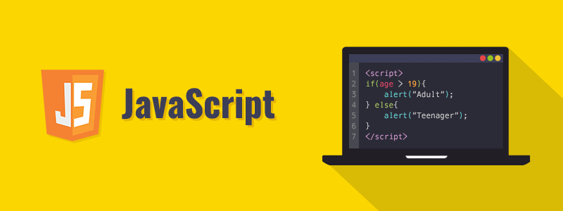
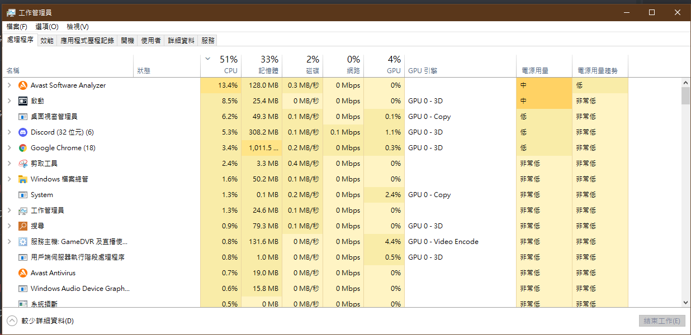
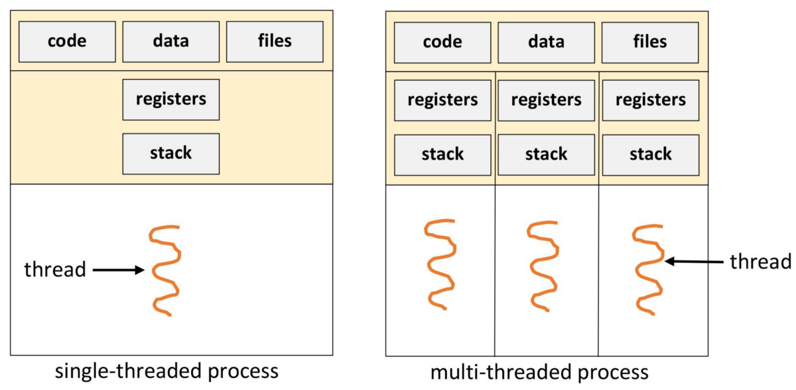
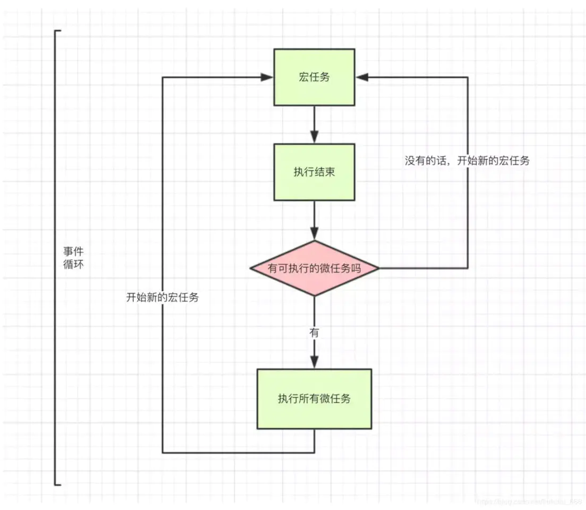

JavaScript 是多線程還是單線程的語言？
2022-03-03

本篇記錄介紹什麼是多線程還是單線程，JavaScript 是多線程還是單線程的語言？以及宏任務、微任務、Event Loop的部分
前言
在我們講到單線程與多線程之前，我們必須要先暸解什麼是線程、線程內部的機制是怎麼運作的。

程式運作
程式（Program）:
Program就是工程師撰寫的程式碼的集合，舉例Chrome、Line等這些稱為Program，而他們的特點是還沒有被執行，因此也就還沒有被載入至記憶體中，而是存放在次級儲存裝置中（硬碟）。
進程（行程；Process）
Process是作業系統分配資源的最小單位，可以從作業系統得到如CPU Time、Memory...等相關資源，這意思是說這個Process在被執行時會消耗多少CPU與Memory。
線程（執行緒；Thread）
Thread為作業系統能夠進行運算排程的最小單位。大部分情況下，它被包含在Process之中，而一個Process裡至少會有一個Thread，是Process中的實際運作單位，一個Process可能有多個線程，其中多個線程可以共用Process的系統資源。
小結：
如果把Program比喻為一個工廠，則Process為工程裡面的生產線，而Thread就是生產線裡面的工人。
在程式裡面單線程、多線程是什麼？
在這邊我們要先了解一下Process同步執行與異步執行的差異
- 同步（Synchronous）：一個Process在執行某個請求的時候，若該請求需要一段時間才能返回信息，那麼這個Process將會一直等待下去，直到收到返回信息才繼續執行下去。
- 異步（Asynchronous）：Process不需要一直等下去，而是繼續執行下面的操作，不管其他Process的狀態。當有消息返回時系統會通知Process進行處理，這樣可以提高執行的效率。

- 單線程：簡單說就是Process裡只有一個Thread，這代表說Process執行時，所需要被執行的Process都會按照連續順序排下來，前面的必須處理好，後面的才會執行，所以單線程為同步。
- 多線程：在Process中同時運行多個Thread完成不同的工作，則稱為多線程，所以多線程為異步。
JavaScript是多線程還是單線程的語言？
按照上方的解說，大家覺得JavaScript是多線程還是單線程的語言？ . . . . . . . . JavaScript其實是一種單線程語言，也就是說，同一個時間只能做一件事，但看到這邊相信很多人會有疑問？那平常我們在寫JavaScript時，不是都同步處理嗎？這是因為JavaScript的多線程都是用單線程模擬出來的，實現的關鍵在於在Javascrip將，任務分成同步與異步兩種執行模式，並且透過Event Loop（事件循環）將單線程達成虛擬多線程的功用。
JavaScript實現非同步運算
其實在於同步與異步任務有一個更精細的定義：
- 宏任務（macro-task）：包括整體代碼script，setTimeout，setInterval（同步任務）
- 微任務（micro-task）：Promise，process.nextTick（異步任務）
Event Loop（事件循環）模型：

- 從任務佇列裡選擇當前要執行的macro-task，如果任佇列爲空，則跳轉執行微任務（micro-task）。
- 將所有微任務執行完成。
- 返回第一步。
結論
JavaScript是單線程語言，但是透過同步任務(宏任務)與異步任務（微任務）加上Event Loop的機制所模擬多線程的功能。